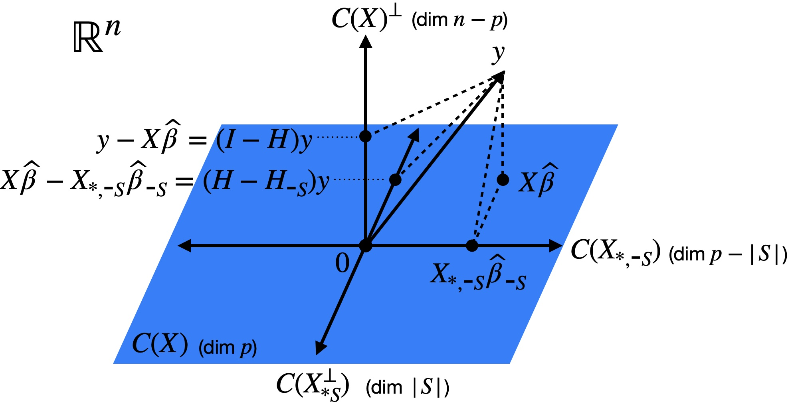

8 Hypothesis testing
See also Agresti 3.2.1, 3.2.2, 3.2.4, 3.2.8
Typically, two types of null hypotheses are tested in a regression setting: those involving one-dimensional parameters and those involving multi-dimensional parameters. For example, consider the null hypotheses \(H_0: \beta_j = 0\) and \(H_0: \boldsymbol{\beta}_S = \boldsymbol{0}\) for \(S \subseteq \{0, 1, \dots, p-1\}\), respectively. We discuss tests of these two kinds of hypotheses in Sections 8.1 and 8.2, and then discuss the power of these tests in Chapter 9.
8.1 Testing a one-dimensional parameter
See also Dunn and Smyth 2.8.3
8.1.1 \(t\)-test for a single coefficient
The most common question to ask in a linear regression context is: Is the \(j\)th predictor associated with the response when controlling for the other predictors? In the language of hypothesis testing, this corresponds to the null hypothesis:
\[ H_0: \beta_j = 0 \tag{8.1}\]
According to equation (7.1), we have \(\widehat{\beta}_j \sim N(0, \sigma^2/s_j^2)\), where, as we learned in Chapter 1:
\[ s_j^{2} \equiv [(\boldsymbol{X}^T \boldsymbol{X})^{-1}_{jj}]^{-1} = \|\boldsymbol{x}_{*j}^\perp\|^2. \]
Therefore,
\[ \frac{\widehat{\beta}_j}{\sigma/s_j} \sim N(0,1), \tag{8.2}\]
and we are tempted to define a level \(\alpha\) test of the null hypothesis (8.1) based on this normal distribution. While this is infeasible since we don’t know \(\sigma^2\), we can substitute in the unbiased estimate (7.5) derived in Section 7.3. Then,
\[ \text{SE}(\widehat{\beta}_j) \equiv \frac{\widehat{\sigma}}{s_j} \]
is the standard error of \(\widehat{\beta}_j\), which is an approximation to the standard deviation of \(\widehat{\beta}_j\). Dividing \(\widehat{\beta}_j\) by its standard error gives us the \(t\)-statistic:
\[ t_j \equiv \frac{\widehat{\beta}_j}{\text{SE}(\widehat{\beta}_j)} = \frac{\widehat{\beta}_j}{\sqrt{\frac{1}{n-p}\|\boldsymbol{\widehat{\epsilon}}\|^2}/s_j}. \]
This statistic is pivotal, in the sense that it has the same distribution for any \(\boldsymbol{\beta}\) such that \(\beta_j = 0\). Indeed, we can rewrite it as:
\[ t_j = \frac{\frac{\widehat{\beta}_j}{\sigma/s_j}}{\sqrt{\frac{\sigma^{-2}\|\boldsymbol{\widehat{\epsilon}}\|^2}{n-p}}}. \]
Recalling the independence of \(\boldsymbol{\widehat{\beta}}\) and \(\boldsymbol{\widehat{\epsilon}}\) (7.3), the scaled chi-square distribution of \(\|\boldsymbol{\widehat{\epsilon}}\|^2\) (7.4), and the standard normal distribution of \(\frac{\widehat{\beta}_j}{\sigma/s_j}\) (8.2), we find that, under \(H_0:\beta_j = 0\), \[ t_j \sim \frac{N(0,1)}{\sqrt{\frac{1}{n-p}\chi^2_{n-p}}}, \quad \text{with numerator and denominator independent.} \]
This distribution is called the \(t\) distribution with \(n-p\) degrees of freedom and is denoted \(t_{n-p}\). This paves the way for the two-sided \(t\)-test:
\[ \phi_t(\boldsymbol{X}, \boldsymbol{y}) = 1(|t_j| > t_{n-p}(1-\alpha/2)), \]
where \(t_{n-p}(1-\alpha/2)\) denotes the \(1-\alpha/2\) quantile of \(t_{n-p}\). Note that, by the law of large numbers,
\[ \frac{1}{n-p}\chi^2_{n-p} \overset{P}{\rightarrow} 1 \quad \text{as} \quad n - p \rightarrow \infty, \]
so for large \(n-p\) we have \(t_{j} \sim t_{n-p} \approx N(0,1)\). Hence, the \(t\)-test is approximately equal to the following \(z\)-test:
\[ \phi_t(\boldsymbol{X}, \boldsymbol{y}) \approx \phi_z(\boldsymbol{X}, \boldsymbol{y}) \equiv 1(|t_j| > z(1-\alpha/2)), \]
where \(z(1-\alpha/2)\) is the \(1-\alpha/2\) quantile of \(N(0,1)\). The \(t\)-test can also be defined in a one-sided fashion if power against one-sided alternatives is desired.
8.1.2 Example: One-sample model
Consider the intercept-only linear regression model \(y = \beta_0 + \epsilon\), and let usapply the \(t\)-test derived above to test the null hypothesis \(H_0: \beta_0 = 0\). We have \(\widehat{\beta}_0 = \bar{y}\). Furthermore, we have
\[ \text{SE}^2(\widehat{\beta}_0) = \frac{\widehat{\sigma}^2}{n}, \quad \text{where} \quad \widehat{\sigma}^2 = \frac{1}{n-1}\|\boldsymbol{y} - \bar{y} \boldsymbol{1}_n\|^2. \]
Hence, we obtain the \(t\) statistic:
\[ t = \frac{\widehat{\beta}_0}{\text{SE}(\widehat{\beta}_0)} = \frac{\sqrt{n} \bar{y}}{\sqrt{\frac{1}{n-1}\|\boldsymbol{y} - \bar{y} \boldsymbol{1}_n\|^2}}. \]
According to the theory above, this test statistic has a null distribution of \(t_{n-1}\).
8.1.3 Example: Two-sample model
Suppose we have \(x_1 \in \{0,1\}\), in which case the linear regression \(y = \beta_0 + \beta_1 x_1 + \epsilon\) becomes a two-sample model. We can rewrite this model as:
\[ y_i \sim \begin{cases} N(\beta_0, \sigma^2) \quad &\text{for } x_i = 0; \\ N(\beta_0 + \beta_1, \sigma^2) \quad &\text{for } x_i = 1. \end{cases} \]
It is often of interest to test the null hypothesis \(H_0: \beta_1 = 0\), i.e., that the two groups have equal means. Let usdefine:
\[ \bar{y}_0 \equiv \frac{1}{n_0}\sum_{i: x_i = 0} y_i, \quad \bar{y}_1 \equiv \frac{1}{n_1}\sum_{i: x_i = 1} y_i, \quad \text{where} \quad n_0 = |\{i: x_i = 0\}| \text{ and } n_1 = |\{i: x_i = 1\}|. \]
Then, we have seen before that \(\widehat{\beta}_0 = \bar{y}_0\) and \(\widehat{\beta}_1 = \bar{y}_1 - \bar{y}_0\). We can compute that:
\[ s_1^2 \equiv \|\boldsymbol{x}_{*1}^{\perp}\|^2 = \|\boldsymbol{x}_{*1} - \frac{n_1}{n}\boldsymbol{1}\|^2 = n_1\frac{n_0^2}{n^2} + n_0\frac{n_1^2}{n^2} = \frac{n_0 n_1}{n} = \frac{1}{\frac{1}{n_0} + \frac{1}{n_1}} \]
and
\[ \widehat{\sigma}^2 = \frac{1}{n-2}\left(\sum_{i: x_i = 0}(y_i - \bar{y}_0)^2 + \sum_{i: x_i = 1}(y_i - \bar{y}_1)^2\right). \]
Therefore, we arrive at a \(t\)-statistic of:
\[ t = \frac{\sqrt{\frac{1}{\frac{1}{n_0} + \frac{1}{n_1}}}(\bar{y}_1 - \bar{y}_0)}{\sqrt{\frac{1}{n-2}\left(\sum_{i: x_i = 0}(y_i - \bar{y}_0)^2 + \sum_{i: x_i = 1}(y_i - \bar{y}_1)^2\right)}}. \]
Under the null hypothesis, this statistic has a distribution of \(t_{n-2}\).
8.1.4 \(t\)-test for a contrast among coefficients
Given a vector \(\boldsymbol{c} \in \mathbb{R}^p\), the quantity \(\boldsymbol{c}^T \boldsymbol{\beta}\) is sometimes called a contrast. For example, suppose \(\boldsymbol{c} = (1,-1, 0, \dots, 0)\). Then, \(\boldsymbol{c}^T \boldsymbol{\beta} = \beta_1 - \beta_2\) is the difference in effects of the first and second predictors. We are sometimes interested in testing whether such a contrast is equal to zero, i.e., \(H_0: \boldsymbol{c}^T \boldsymbol{\beta} = 0\). While this hypothesis can involve two or more of the predictors, the parameter \(\boldsymbol{c}^T \boldsymbol{\beta}\) is still one-dimensional, and therefore we can still apply a \(t\)-test. Going back to the distribution \(\boldsymbol{\widehat{\beta}} \sim N(\boldsymbol{\beta}, \sigma^2(\boldsymbol{X}^T \boldsymbol{X})^{-1})\), we find that:
\[ \boldsymbol{c}^T\boldsymbol{\widehat{\beta}} \sim N(\boldsymbol{c}^T\boldsymbol{\beta}, \sigma^2\boldsymbol{c}^T (\boldsymbol{X}^T \boldsymbol{X})^{-1} \boldsymbol{c}). \tag{8.3}\]
Therefore, under the null hypothesis that \(\boldsymbol{c}^T \boldsymbol{\beta} = 0\), we can derive that:
\[ \frac{\boldsymbol{c}^T \boldsymbol{\widehat{\beta}}}{\widehat{\sigma} \sqrt{\boldsymbol{c}^T (\boldsymbol{X}^T \boldsymbol{X})^{-1} \boldsymbol{c}}} \sim t_{n-p}, \tag{8.4}\]
giving us another \(t\)-test. Note that the \(t\)-tests described above can be recovered from this more general formulation by setting \(\boldsymbol{c} = \boldsymbol{e}_j\), the indicator vector with the \(j\)th coordinate equal to 1 and all others equal to zero.
8.2 Testing a multi-dimensional parameter
See also Dunn and Smyth 2.10.1
8.2.1 \(F\)-test for a group of coefficients
Now we move on to the case of testing a multi-dimensional parameter: \(H_0: \boldsymbol{\beta}_S = \boldsymbol{0}\) for some \(S \subseteq \{0, 1, \dots, p-1\}\). In other words, we would like to test
\[ H_0: \boldsymbol{y} = \boldsymbol{X}_{*, \text{-}S} \boldsymbol{\beta}_{\text{-}S} + \boldsymbol{\epsilon} \quad \text{versus} \quad H_1: \boldsymbol{X} \boldsymbol{\beta} + \boldsymbol{\epsilon}. \]
To test this hypothesis, let us fit least squares coefficients \(\boldsymbol{\widehat{\beta}}_{\text{-}S}\) and \(\boldsymbol{\widehat{\beta}}\) for the partial model as well as the full model. If the partial model fits well, then the residuals \(\boldsymbol{y} - \boldsymbol{X}_{*, \text{-}S} \boldsymbol{\widehat{\beta}}_{\text{-}S}\) from this model will not be much larger than the residuals \(\boldsymbol{y} - \boldsymbol{X} \boldsymbol{\widehat{\beta}}\) from the full model. To quantify this intuition, let us recall our analysis of variance decomposition from Chapter 1:
\[ \|\boldsymbol{y} - \boldsymbol{X}_{*, \text{-}S} \boldsymbol{\widehat{\beta}}_{\text{-}S}\|^2 = \|\boldsymbol{X} \boldsymbol{\widehat{\beta}} - \boldsymbol{X}_{*, \text{-}S} \boldsymbol{\widehat{\beta}}_{\text{-}S}\|^2 + \|\boldsymbol{y} - \boldsymbol{X} \boldsymbol{\widehat{\beta}}\|^2. \]
Let us consider the ratio
\[ \frac{\|\boldsymbol{y} - \boldsymbol{X}_{*, \text{-}S} \boldsymbol{\widehat{\beta}}_{\text{-}S}\|^2 - \|\boldsymbol{y} - \boldsymbol{X} \boldsymbol{\widehat{\beta}}\|^2}{\|\boldsymbol{y} - \boldsymbol{X} \boldsymbol{\widehat{\beta}}\|^2} = \frac{\|\boldsymbol{X} \boldsymbol{\widehat{\beta}} - \boldsymbol{X}_{*, \text{-}S} \boldsymbol{\widehat{\beta}}_{\text{-}S}\|^2}{\|\boldsymbol{y} - \boldsymbol{X} \boldsymbol{\widehat{\beta}}\|^2}, \tag{8.5}\]
which is the relative increase in the residual sum of squares when going from the full model to the partial model. To interpret this ratio geometrically, let us first examine the quantity \(\boldsymbol{X} \boldsymbol{\widehat{\beta}} - \boldsymbol{X}_{*, \text{-}S} \boldsymbol{\widehat{\beta}}_{\text{-}S}\) from the numerator. Letting \(\boldsymbol{H}\) and \(\boldsymbol{H}_{\text{-}S}\) be the projection matrices for the full and partial models, we have \[ \boldsymbol{X} \boldsymbol{\widehat{\beta}} - \boldsymbol{X}_{*, \text{-}S} \boldsymbol{\widehat{\beta}}_{\text{-}S} = (\boldsymbol H - \boldsymbol H_{\text{-}S}) \boldsymbol{y}. \] It turns out the the matrix \(\boldsymbol{H} - \boldsymbol{H}_{\text{-}S}\) is a projection matrix:
Proposition 8.1 The matrix \(\boldsymbol{H} - \boldsymbol{H}_{\text{-}S}\) is a projection matrix onto the space \(C(\boldsymbol{X}_{*S}^\perp)\) spanned by the columns of \(\boldsymbol X_{*S}\) adjusted for \(\boldsymbol X_{*,\text{-}S}\).
Figure 8.1 illustrates this relationship.

Proof. Let \(\boldsymbol v \in C(\boldsymbol{X}_{*S}^\perp)\). Because \(\boldsymbol v\) is orthogonal to \(C(\boldsymbol X_{*,\text{-}S})\) by construction, we have \((\boldsymbol{H} - \boldsymbol{H}_{\text{-}S})\boldsymbol v = \boldsymbol{H}\boldsymbol v - \boldsymbol{H}_{\text{-}S}\boldsymbol v = \boldsymbol v - \boldsymbol 0 = \boldsymbol v\). On the other hand, let \(v \in C(\boldsymbol X_{*, \text{-}S})\). Then, we have \((\boldsymbol{H} - \boldsymbol{H}_{\text{-}S})\boldsymbol v = \boldsymbol{H}\boldsymbol v - \boldsymbol{H}_{\text{-}S}\boldsymbol v = \boldsymbol v - \boldsymbol v = \boldsymbol 0\). Finally, let \(v \in C(\boldsymbol X)^\perp\). Then, we have \((\boldsymbol{H} - \boldsymbol{H}_{\text{-}S})\boldsymbol v = \boldsymbol{H}\boldsymbol v - \boldsymbol{H}_{\text{-}S}\boldsymbol v = \boldsymbol 0 - \boldsymbol 0 = \boldsymbol 0\). From these three observations, it follows that \(\boldsymbol{H} - \boldsymbol{H}_{\text{-}S}\) is a projection matrix onto \(C(\boldsymbol{X}_{*S}^\perp)\).
With this additional intuition, let us rewrite the ratio (8.5) as
\[ \frac{\|\boldsymbol{X} \boldsymbol{\widehat{\beta}} - \boldsymbol{X}_{*, \text{-}S} \boldsymbol{\widehat{\beta}}_{\text{-}S}\|^2}{\|\boldsymbol{y} - \boldsymbol{X} \boldsymbol{\widehat{\beta}}\|^2} = \frac{\|(\boldsymbol{H} - \boldsymbol{H}_{\text{-}S}) \boldsymbol{y}\|^2}{\|(\boldsymbol{I} - \boldsymbol{H}) \boldsymbol{y}\|^2}, \]
revealing that the numerator and denominator are the squared norms of the projections of \(\boldsymbol{y}\) onto \(C(\boldsymbol{X}_{*S}^\perp)\) and \(C(\boldsymbol{X})^\perp\), respectively (Figure 8.1). The numerator is expected to be large if \(\boldsymbol \beta_{S} \neq 0\), so \(\boldsymbol y\) will have a large projection onto \(C(\boldsymbol{X}_{*S}^\perp)\). We can view the denominator as a normalization term.
Now, let us derive the distribution of this test statistic under the null hypothesis. If \(\boldsymbol \beta_{S} = 0\), then we have \(\boldsymbol{y} = \boldsymbol{X}_{*, \text{-}S} \boldsymbol{\beta}_{\text{-}S} + \boldsymbol{\epsilon}\), and
\[ (\boldsymbol{H} - \boldsymbol{H}_{\text{-}S}) \boldsymbol{X}_{*,\text{-}S} \boldsymbol{\beta}_{\text{-}S} = (\boldsymbol{I} - \boldsymbol{H}) \boldsymbol{X}_{*,\text{-}S} \boldsymbol{\beta}_{\text{-}S} = 0 \]
because \(\boldsymbol{X}_{*, \text{-}S} \boldsymbol{\beta}_{\text{-}S} \in C(\boldsymbol{X}_{*, \text{-}S})\), and the latter space is orthogonal to both \(C(\boldsymbol{X}_{*,S}^\perp)\) and \(C(\boldsymbol{X})^\perp\). It follows that
\[ \frac{\|(\boldsymbol{H} - \boldsymbol{H}_{\text{-}S}) \boldsymbol{y}\|^2}{\|(\boldsymbol{I} - \boldsymbol{H}) \boldsymbol{y}\|^2} = \frac{\|(\boldsymbol{H} - \boldsymbol{H}_{\text{-}S}) \boldsymbol{\epsilon}\|^2}{\|(\boldsymbol{I} - \boldsymbol{H}) \boldsymbol{\epsilon}\|^2}. \]
Since the projection matrices in the numerator and denominator project onto orthogonal subspaces, we have \((\boldsymbol{H} - \boldsymbol{H}_{\text{-}S}) \boldsymbol{\epsilon} \perp\!\!\!\perp (\boldsymbol{I} - \boldsymbol{H}) \boldsymbol{\epsilon}\), with \(\|(\boldsymbol{H} - \boldsymbol{H}_{\text{-}S}) \boldsymbol{\epsilon}\|^2 \sim \sigma^2 \chi^2_{|S|}\) and \(\|(\boldsymbol{I} - \boldsymbol{H}) \boldsymbol{\epsilon}\|^2 \sim \sigma^2 \chi^2_{n-p}\). Renormalizing numerator and denominator to have expectation 1 under the null, we arrive at the \(F\)-statistic
\[ F \equiv \frac{(\|\boldsymbol{y} - \boldsymbol{X}_{*, \text{-}S} \boldsymbol{\widehat{\beta}}_{\text{-}S}\|^2 - \|\boldsymbol{y} - \boldsymbol{X} \boldsymbol{\widehat{\beta}}\|^2)/|S|}{\|\boldsymbol{y} - \boldsymbol{X} \boldsymbol{\widehat{\beta}}\|^2/(n-p)}. \]
We have derived that under the null hypothesis,
\[ F \sim \frac{\chi^2_{|S|}/|S|}{\chi^2_{n-p}/(n-p)}, \quad \text{with numerator and denominator independent.} \]
This distribution is called the \(F\)-distribution with \(|S|\) and \(n-p\) degrees of freedom, and is denoted \(F_{|S|, n-p}\). Denoting by \(F_{|S|, n-p}(1-\alpha)\) the \(1-\alpha\) quantile of this distribution, we arrive at the \(F\)-test
\[ \phi_F(\boldsymbol{X}, \boldsymbol{y}) \equiv 1(F > F_{|S|, n-p}(1-\alpha)). \]
Note that the \(F\)-test searches for deviations of \(\boldsymbol{\beta}_{S}\) from zero in all directions, and does not have one-sided variants like the \(t\)-test.
8.2.2 Example: Testing for any significant coefficients except the intercept
Suppose \(\boldsymbol{x}_{*,0} = \boldsymbol{1}_n\) is an intercept term. Then, consider the null hypothesis \(H_0: \beta_1 = \cdots = \beta_{p-1} = 0\). In other words, the null hypothesis is the intercept-only model, and the alternative hypothesis is the regression model with an intercept and \(p-1\) additional predictors. In this case, \(S = \{1, \dots, p-1\}\) and \(\text{-}S = \{0\}\). The corresponding \(F\) statistic is
\[ F \equiv \frac{(\|\boldsymbol{y} - \bar{y} \boldsymbol{1}\|^2 - \|\boldsymbol{y} - \boldsymbol{X} \boldsymbol{\widehat{\beta}}\|^2)/(p-1)}{\|\boldsymbol{y} - \boldsymbol{X} \boldsymbol{\widehat{\beta}}\|^2/(n-p)} = \frac{\|\boldsymbol{X} \boldsymbol{\widehat{\beta}} - \bar{y} \boldsymbol{1}\|^2/(p-1)}{\|\boldsymbol{y} - \boldsymbol{X} \boldsymbol{\widehat{\beta}}\|^2/(n-p)} \]
with null distribution \(F_{p-1, n-p}\).
8.2.3 Example: Testing for equality of group means in \(C\)-groups model
As a further special case, consider the \(C\)-groups model from Chapter 1. Recall the ANOVA decomposition
\[ \sum_{i = 1}^n (y_i - \bar{y})^2 = \sum_{i = 1}^n (\bar{y}_{c(i)} - \bar{y})^2 + \sum_{i = 1}^n (y_i - \bar{y}_{c(i)})^2 = \text{SSB} + \text{SSW}. \]
The \(F\)-statistic in this case becomes
\[ F = \frac{\sum_{i = 1}^n (\bar{y}_{c(i)} - \bar{y})^2/(C-1)}{\sum_{i = 1}^n (y_i - \bar{y}_{c(i)})^2/(n-C)} = \frac{\text{SSB}/(C-1)}{\text{SSW}/(n-C)}, \]
with null distribution \(F_{C-1, n-C}\).